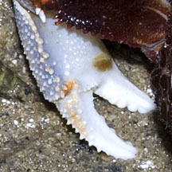
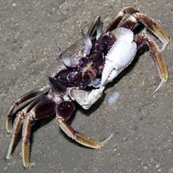
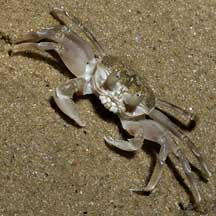
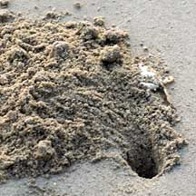
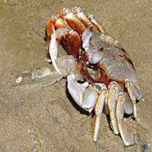
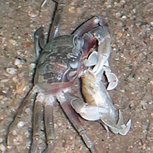
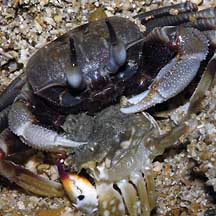
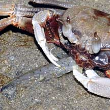

|
|
| crabs text index | photo index |
| Phylum Arthropoda > Subphylum Crustacea > Class Malacostraca > Order Decapoda > Brachyurans > Superfamily Ocypodoidea |
| Horn-eyed
ghost crab Ocypode ceratophthalmus Family Ocypodidae updated Mar 2020
Where seen? This large but elusive crab is commonly seen on many of our shores. Yet, it is hard to spot. It probably got its common name because it is active only at night, and it moves so swiftly over the sand that you usually literally only get a ghostly glimpse as it skitters away in the darkness. Features: Body width 6-8cm. Body squarish box-like. Usually bluish grey with brown markings on the back, often in the shape of an "H". But a variety of other patterns also seen. Pincers long, downward pointing often with white or pale claws. Has a vertical ridge on the inside of the 'palm' that produces a rasping sound when rubbed against the rough surface of the face. This is probably done to declare their territory. Legs long with pointed tips. Large eyes on short stalks which can fold away into grooves on the body when the crab burrows into the sand. Adult crabs have a characteristic tall skinny point or 'horn' on top of each eye (called the stylophthalmous), usually darker in colour. The horn is shorter in females and absent in juveniles (2.5cm or smaller). A study found that juveniles can change their body colour and pattern to match the surrounding sand, usually becoming lighter during the day and darker at night. |
 Raffles Lighthouse, Jul 06 |
 A slot on the body for the eye stalk to 'fold' away. Tanah Merah, Aug 09 |
 Vertical ridge and tiny bumps on the inside of the 'palm'. Tanah Merah, May 11 |
| Ghost crabs are well adapted for life out of water and are among the
few marine creatures that roam the beaches at low tide, particularly
at night. They run rapidly on the sand and can burrow quickly into
wet sand. They can stay for a long time away from the sea because
they can absorb water from the wet sand through special hairs on the
base of their legs by capillary action. Similar to the Smooth-eyed ghost crab (Ocypode cordimanus) which is rarely encountered. Speedy Ghosts: Ghost crabs can really run fast! As suggested by their scientific name ("Ocy" means swift and "podi" foot in Greek). They literally fly over the sand and their movement has been described as a small leaf blowing over the sand surface. In fact, they may be among the fastest land creatures, moving at 100 bodylengths per second. In comparison, the cockroach does 50 bodylengths while the cheetah does a sluggish 10 bodylengths. Ghost crabs are only beaten by tiger beetles which do 171 body lengths when they are really scared. Being fast moving creatures, Ghost crabs have excellent eyesight to see where they are going. Often all you will see of the crabs during the day are their large holes marking the entrance to their burrows. These are usually on sandy beach near or above the high water mark. It is said that when tunneling out their burrow, the crab carry sand to about 50-100 cm away from the burrow entrance, then toss the sand as far as it can. This behaviour probably explains the typical "spray" pattern of sand around the burrow. The burrow can be quite deep. So please don't try to dig up the crab. |
|
 Some have white pincers, one much bigger than the other. Sisters Islands, Jan 06 |
 No 'horns' on the eyes: young one? East Coast, Jun 06 |
 Typical burrow near the high water mark. Changi, Apr 05 |
| What does it eat? At low tide, this scavenger is very active at night, scurrying everywhere on the shore. It has been seen eating all manner of recently dead animals on the shore from fireworms to fish, shrimps and even other crabs. It may also hunt small animals and clams and snails near the water's edge. Near the flotsam left on the high water line, we can also sometimes see little scratch marks probably made by ghost crabs checking the line for edible titbits. |
 Eating a shrimp. Tanah Merah, Aug 09 |
 Eating a Moon crab. Pulau Tekukor, Apr 13 |
 Eating crab. Pulau Hantu, Nov 03 |
|
 Eating a fish, probably a goby. Tanah Merah, Sep 10 |
| Status and threats: Our Horn-eyed ghost crabs are not listed among the threatened animals of Singapore. However, like other creatures of the intertidal zone, they are affected by human activities such as reclamation and pollution. As they settle near the high water mark, they are also impacted by floating litter that accumulates at this level. |
| Horn-eyed ghost crabs on Singapore shores |
On wildsingapore
flickr
|
| Other sightings on Singapore shores |
| Filmed on Changi, Jan 10 Ghost Crab @ Changi from SgBeachBum on Vimeo. |
| ghost crabs @ tanah merah from SgBeachBum on Vimeo. |
Links
References
|